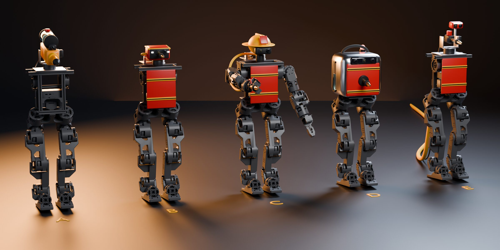

Body concepts
Design review. First written on 7 October 2026. Last edited on 11 October 2026.
We want a robot that walks to a fire and puts it out with a water nozzle or, as a fallback, a water gun. The body reuses the legs and the torso frame of the open-source Berkeley Humanoid Lite. This article shows five ways to add the water system, the cameras and the aiming. Each concept is drawn fully assembled, so we can compare them before we buy parts.
The concepts differ in three choices: where the water comes from, how the robot aims, and what sits on top of the hips.
Overview


Shared base
All five concepts stand on the Berkeley Humanoid Lite legs: 6 motors per leg and about 0.8 m tall. In the robot's URDF file, the legs and the torso frame weigh 11.3 kg. Concept C also keeps the two arms.
Concepts B to E carry an RGB camera and a small thermal camera side by side. Concept A has a single RGB camera fixed on the gun.
Concepts
Concept A: Water gun turret
An electric toy water gun sits on a two-servo pan-tilt mount on top of the torso. The gun keeps its own tank and pump. We remove the handle and connect the trigger to a relay. A USB camera sits on the gun, so the image shows where the water goes.


| Water | Gun tank, about 0.5 L |
|---|---|
| Aim | Pan-tilt, 2 servos |
| Added mass | ~1.4 kg |
| Build effort | Low |
Advantages
- Fastest and cheapest build. No pump or hoses to design.
- Good first demonstration while the walking work goes on.
Disadvantages
- Short range and low flow.
- The gun sits high, so the centre of mass goes up.
Concept B: Backpack pump
A tank and a 12 V diaphragm pump sit on a back frame. The head carries the cameras and the nozzle. The nozzle is fixed under the cameras, so the robot sprays where it looks. After one calibration, the centre of the camera image is the aim point. The pump sits above the tank and primes itself.


| Water | 1.4 L tank on the back |
|---|---|
| Aim | Head pan-tilt, 2 servos |
| Added mass | ~2.7 kg |
| Build effort | Medium |
Advantages
- More water and more pressure than A.
- One aim system for vision and water.
Disadvantages
- The water on the back moves the centre of mass backward. The walking policy must learn this load.
- The water moves in the tank while the robot walks.
Concept C: Arm lance
This is the full Berkeley Humanoid Lite with arms. The right arm holds a nozzle lance, and the head carries a helmet with cameras. The arm already exists in the Berkeley design, with 5 motors. The hose runs from the backpack pump over the right shoulder and along the arm. The left arm can help with balance.


| Water | 1.0 L backpack tank and pump |
|---|---|
| Aim | Right arm, 5 motors |
| Added mass | ~2.3 kg + 5.0 kg of arms |
| Build effort | High |
Advantages
- Most human-like. Best for a presentation.
- The arm can aim in many directions and around obstacles.
Disadvantages
- Heaviest concept, about 18.6 kg.
- The arm must hold the lance against the push of the water jet.
- Most control work: arm and balance together.
Concept D: Sealed shell
A reflective shell covers the torso. The nozzle is fixed in the chest, and the robot aims with its whole body. The tank, pump, battery and computer are inside the shell. The robot turns with its hip motors to aim left and right, and bends its legs to aim up and down. A gauge on the side shows the water level.


| Water | About 1 L inside the shell |
|---|---|
| Aim | Whole body, no extra motors |
| Added mass | ~2.3 kg |
| Build effort | Medium to high |
Advantages
- Protects the electronics from water and heat.
- No extra motors that can break. Carry handle on top.
Disadvantages
- Slow and coarse aim. The robot must stop and turn to aim.
- The shell needs air vents for the electronics.
Concept E: Tethered hose
There is no water on board. A hose from an external pump or a tap connects to the back of the pelvis. A solenoid valve on the pan-tilt mount opens the nozzle. The camera sits on a short mast. A power cable can run next to the hose, so the robot can also run without a battery.


| Water | No limit, from outside |
|---|---|
| Aim | Pan-tilt, 2 servos |
| Added mass | ~1.0 kg + hose pull |
| Build effort | Low to medium |
Advantages
- Lightest robot. No limit on water or run time.
- An outside pump can give real hose pressure.
Disadvantages
- The hose pulls the robot back and can catch the legs.
- The hose length limits the range, and the hose twists when the robot turns.
Comparison
| Concept | Water | Aim | New motors | Added mass | Total mass | Build effort |
|---|---|---|---|---|---|---|
| A | Gun tank, ~0.5 L | Pan-tilt | 2 servos | ~1.4 kg | ~12.7 kg | Low |
| B | 1.4 L tank and pump | Head pan-tilt | 2 servos | ~2.7 kg | ~14.0 kg | Medium |
| C | 1.0 L tank and pump | Right arm | 0 (the arm has 5) | ~7.3 kg | ~18.6 kg | High |
| D | ~1 L inside | Whole body | 0 | ~2.3 kg | ~13.6 kg | Medium to high |
| E | External, no limit | Pan-tilt | 2 servos | ~1.0 kg | ~12.3 kg | Low to medium |
Suggested first build
Build concept A first. It needs the least new work and gives an early demonstration. Its top plate takes the head of B or the valve of E later.
The simulation results since 7 October support this choice. With the real CAD parts, the worst leg torque for A is 5.2 Nm, under the 6 Nm policy limit. The official walking policy walks with A at 6 Nm. See Payload on the legs and Walking in the progress article.
Notes on the renders
The renders come from Blender 5.2 (Cycles). The legs, the torso and the arms are the real Berkeley Humanoid Lite meshes, placed from the URDF in the default standing pose: hip −0.2 rad, knee 0.4 rad, ankle −0.3 rad. The gun, tanks, pumps, heads and shell are simple placeholder shapes with approximate sizes. Click an image to open it at full size.